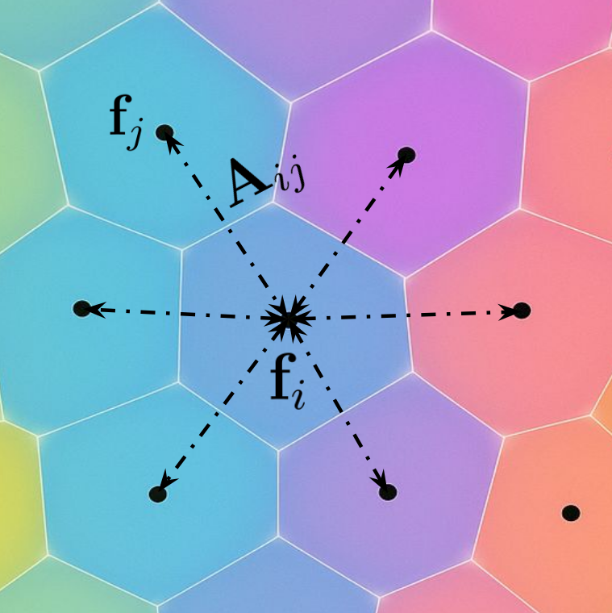
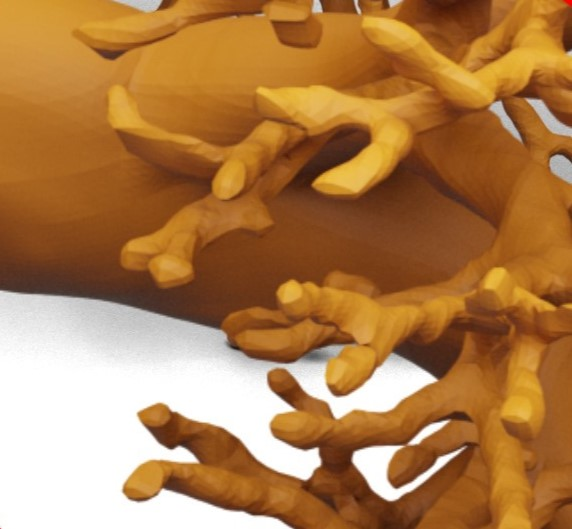
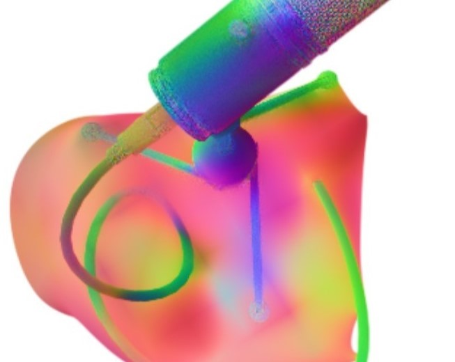
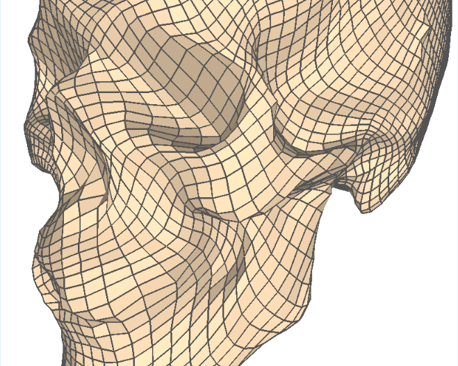

PhD Candidate in 3D Vision and Neural Graphics
University of Edinburgh & Generative AI Laboratory (GAIL)
T[DOT]M[DOT]WALKER[AT]ED.AC.UK Google Scholar |
GitHub |
LinkedIn
About Me
Hello! I am a final-year Ph.D. candidate at the University of Edinburgh and a researcher at the Generative AI Laboratory (GAIL). My research interests are in world modeling, geometric deep learning, differentiable rendering, and scene understanding. Before starting my PhD I studied Mathematics and Physics at the University of Durham, with a focus on the geometrical aspects of gauge field theories. Following this, I became fascinated by geometric deep learning, and came to the University Of Edinburgh to read Artifical Intelligence. Since then my work was on differentiable rendering, 3D reconstruction and now generative world modeling.
I am currently looking for both collaborators and internships, so feel free to reach out!
Research Interests
World Modeling
Geometric Deep Learning
Differentiable Rendering
Scene Understanding
Education
PhD, 3D Vision University of Edinburgh, 2022-Present
MSc, Artificial Intelligence University of Edinburgh, 2021-2022
MSci, Mathematics and Physics University of Durham, 2016-2020
Selected Publications
PERSIST: World Models with Persistent 3D State Thomas Walker*, Samuel Garcin*, Steven McDonagh, Tim Pearce, Hakan Bilen, Kaixin Wang, Tianyu He, Jiang Bian. ICML (Under Review), 2026. [Website]
*Equal Contribution

Semantic Foam: Unifying Spatial and Semantic Scene Decomposition
Amr Sharafeldin, Aryan Mikaeili, Thomas Walker, Shrisudhan Govindarajan, Daniel Rebain, Kwang Moo Yi, Andrea Tagliasacchi. CVPR, 2026.

CrossSDF: Reconstruction Of Thin Structures From Cross Sections Thomas Walker*, Salvatore Esposito*, Daniel Rebain, Amir Vaxman, Arno Onken, Changjian Li, Oisin Mac Aodha. CVPR, 2025. [PDF]
*Equal Contribution

Spatially Adaptive Hash Encodings For Neural Surface Reconstruction Thomas Walker, Octave Mariotti, Amir Vaxman, Hakan Bilen. WACV, 2025. [PDF]

Explicit Neural Surfaces: Learning Continuous Geometry With Deformation Fields Thomas Walker, Octave Mariotti, Amir Vaxman, Hakan Bilen. NeurIPS NeurReps Workshop, 2023. [PDF]